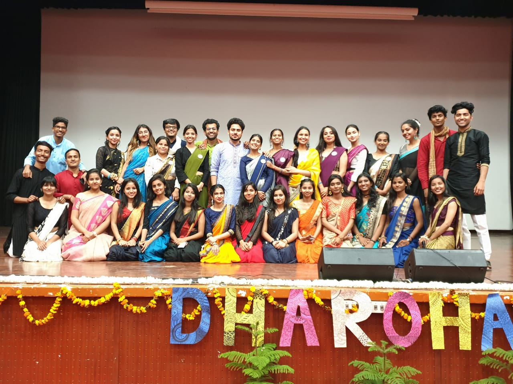
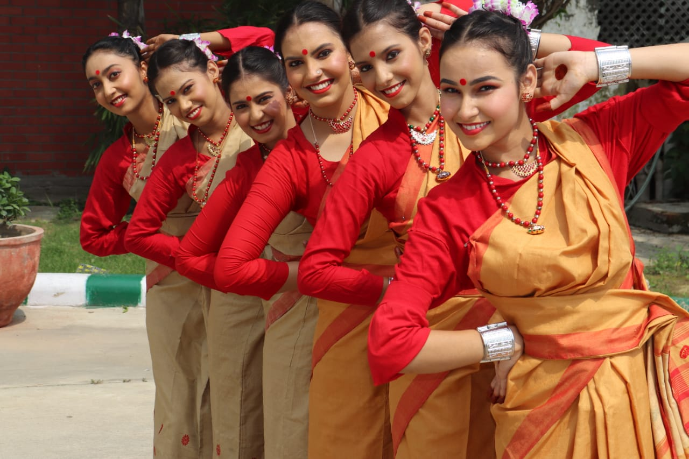
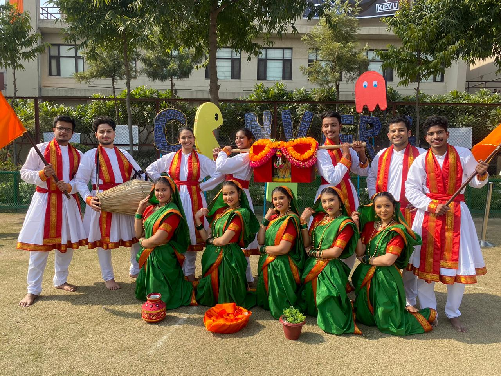
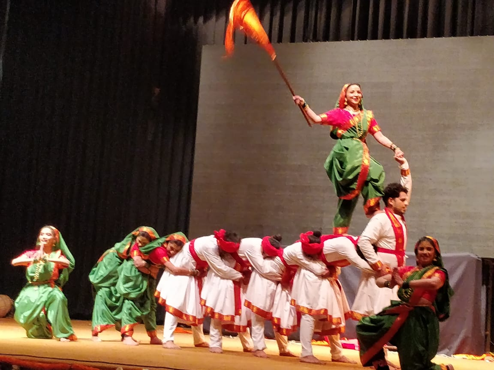
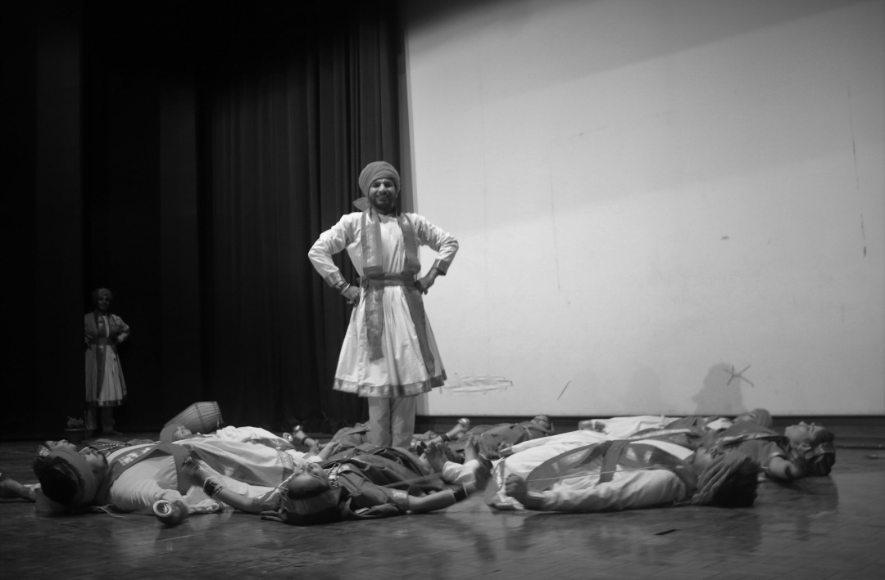
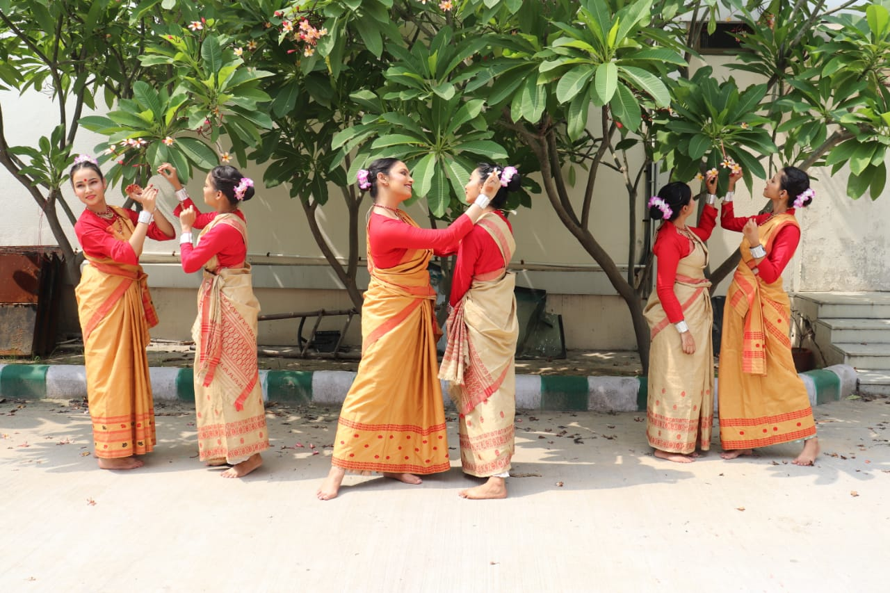
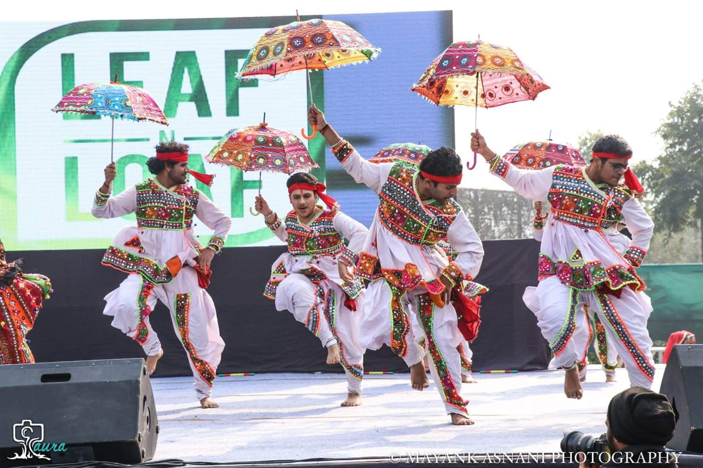
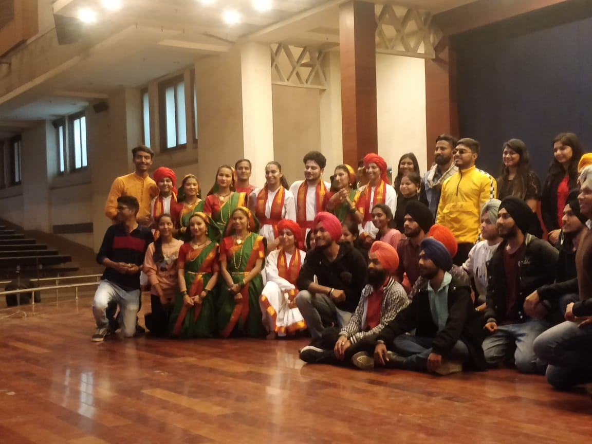
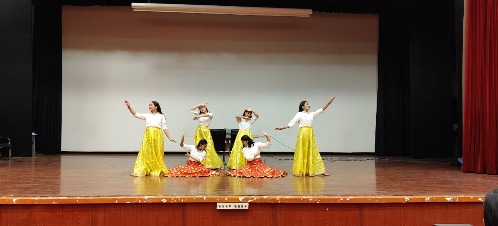
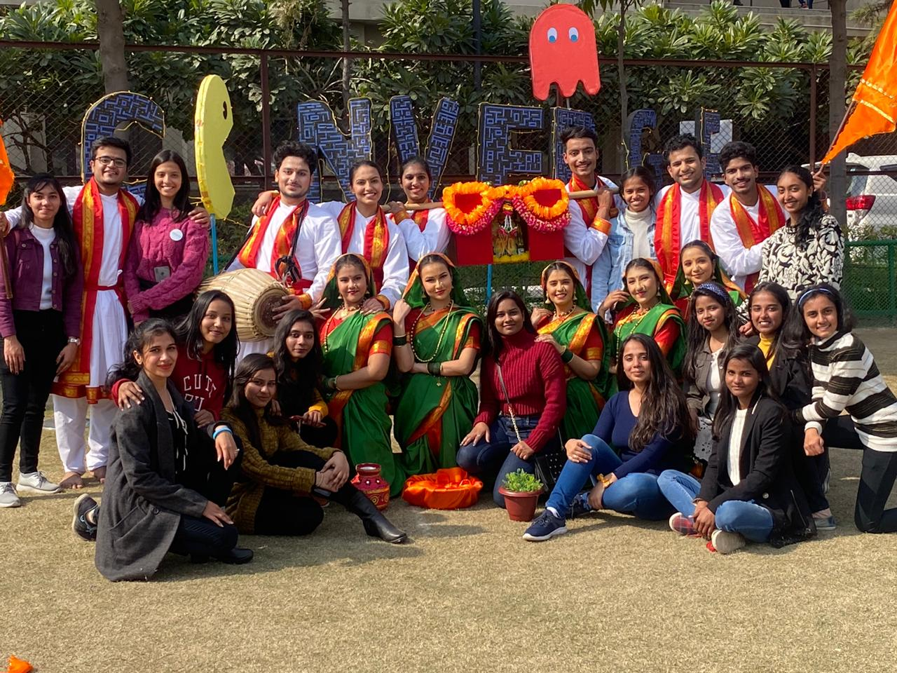

Nataraj
Nataraj - The Dance Society of MAC

1/10
💃🕺💃🕺🎶💃🕺👯♂️👯♀️🕺💃
⪦
⪧









Nataraj
Nataraj - The Dance Society of MAC is the strong pillar of the performing arts wing of the institution.
Versatility is its hallmark. Nataraj not only stands strong as a tough competitor to other teams equally
competent but stands even stronger as a family. Nataraj is specifically known in DU circuit for its
gracious,alluring and energetic folk dances like garba,dandiya raas,hudo,dindi and many others. Beside
this Nataraj is also elite in western dances such as hip hop, whacking, shuffling, contemporary,mudra
tutting,house and freestyle. When come to classical dances members of Nataraj remarkably perfect in this
era too,with kathak and Bharatnatyam forms Nataraj achieved many awards. Nataraj is always eager to
discover new dance forms and amazed audience with its startling performance.
With 6 years of it being in action,Nataraj has thrivingly managed to rack up the accolades!
Gallery
Copyright © 2021 - All Rights Reserved - Jigyasu 😎